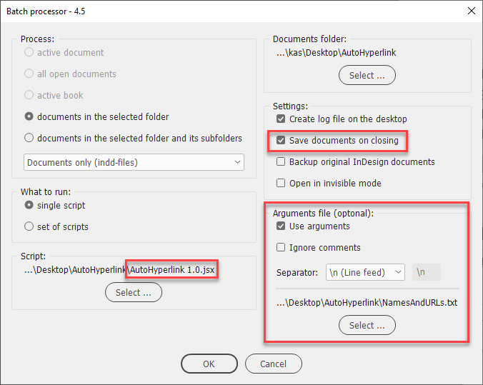
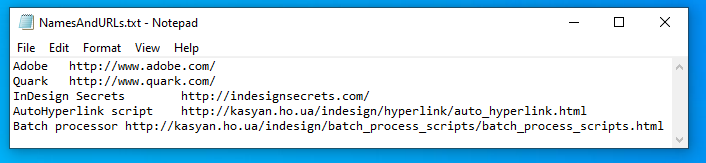
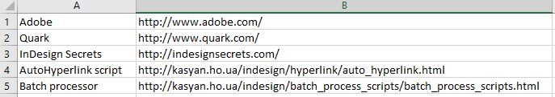
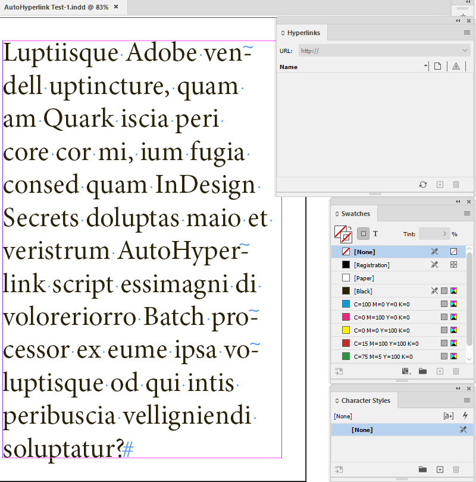
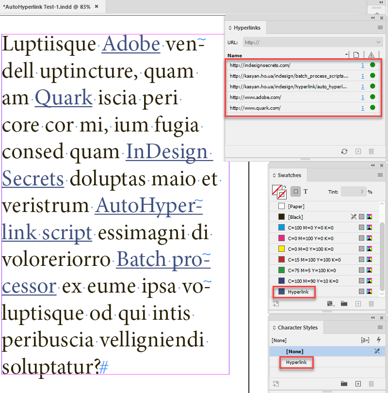
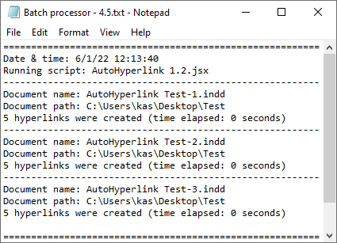
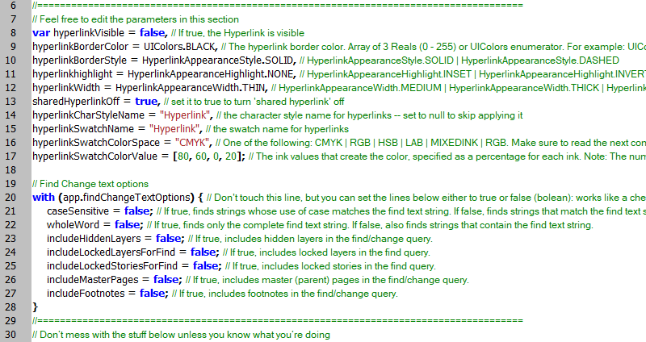
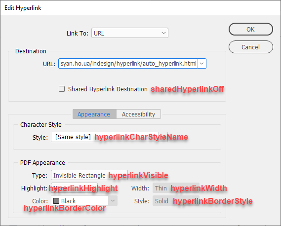
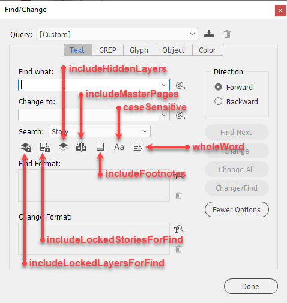

Auto hyperlink
Script for InDesign: can be used both as a regular script or run from the batch processor.
Written by Kasyan in InDesign 2022 for Windows. Though the original idea belongs to Nobrainer, it's a brand new script.
This script reads data from a (plain) text file and creates hyperlinks.
If used as a regular script, download the package, unzip and install it into the Scripts Panel folder — both files: AutoHyperlink.jsx and NamesAndURLs.txt should be located in the same folder. If the NamesAndURLs.txt file is missing, the script opens a dialog box asking to select a file with names and URLs.
Batch processing
If used from the batch processor, the script can be located anywhere, and the file listing names and URLs should be selected in the Arguments section. Make sure to turn off the Ignore comments check box, because URLs as JavaScript comments contain double forward slashes. If you turn it on, the script will ignore the slashes and the text that follows so hyperlinks will not be produced properly. The txt-file can also be located anywhere, and have any name. Also, don’t forget to turn on the Save document on closing check box. (I forget to do this from time to time).

Edit NamesAndURLs.txt file in a plain text editor (that doesn't format text), e.g. Notepad. The included sample file contains five lines, replace them with your stuff. Each line consists of two columns separated by a tab. The first line is a text that will be used for text search and if found, converted to a hyperlink, the second is the URL address for this link.
Example:
Type "Adobe", press the Tab key, type "http://www.adobe.com/", press Enter/Return key to go to the next line, and so on. Tabs divide columns and Returns separate records.

Alternatively, you can prepare the list in Excel and save it as a tab-delimited text file.

The script searches for every text entrance you defined in the first column, converting it to a hyperlink with a destination taken from the second column, and applies the"Hyperlink" character style to it.
Before

After

The script applies to the hyperlinks the Hyperlink character style which in turn applies the swatch of the same name and underline. If the style and swatch don’t exist in the document, they will be created automatically. (The user can disable applying the style by setting the hyperlinkCharStyleName variable to null).
If you turn on logging, the script writes information about processed documents, the number of hyperlinks created, and the time it took.

Variables
When writing this script, I strived to provide the user with maximum flexibility. On the top of the script, I made a section with parameters that can be safely changed to fine-tune the script. It has two sub-sections: one relates to the hyperlink settings and another to the find-change text options. . Each variable has a comment explaining how to use it or offering possible options.

In the hyperlink settings, I used InDesign’s default settings.
Below are illustrations explaining the relationship between the abovementioned variables and settings in InDesign.
Hyperlink

hyperlinkVisible — If true, the Hyperlink is visible
hyperlinkBorderColor — The hyperlink border color. Array of 3 Reals (0 - 255) or UIColors enumerator. For example: for red you can use either UIColors.RED or [255, 0, 0]
hyperlinkBorderStyle — HyperlinkAppearanceStyle.SOLID | HyperlinkAppearanceStyle.DASHED
hyperlinkHighlight — HyperlinkAppearanceHighlight.INSET | HyperlinkAppearanceHighlight.INVERT | HyperlinkAppearanceHighlight.NONE | HyperlinkAppearanceHighlight.OUTLINE
hyperlinkWidth — HyperlinkAppearanceWidth.MEDIUM | HyperlinkAppearanceWidth.THICK | HyperlinkAppearanceWidth.THIN
sharedHyperlinkOf — set it to true to turn 'shared hyperlink' off
hyperlinkCharStyleName — the character style name for hyperlinks — set to null to skip applying it
hyperlinkSwatchName — the swatch name for hyperlinks
hyperlinkSwatchColorSpace — One of the following: CMYK | RGB | HSB | LAB | MIXEDINK | RGB. Make sure to read the next comment if you're going to change it.
hyperlinkSwatchColorValue — The ink values that create the color, specified as a percentage for each ink. Note: The number of values required and the range depends on the color space. For RGB, specify three values, with each value in the range 0 to 255; for CMYK, specify four values representing C, M, Y, and K, with each value in the range 0 to 100; for LAB, specify three values representing L (Range: 0 to 100), A (Range: -128 to 127), and B (Range: -128 to 127); for mixed ink, specify values for each ink in the ink list, with each value in the range 0 to 100. For example: for red in RGB space you should use three elements [255, 0, 0], and for red in CMYK four — [0, 100, 100, 0]
Find/Change text options

caseSensitive — If true, finds strings whose use of case matches the find text string. If false, finds strings that match the find text string regardless of case.
wholeWord — If true, finds only the complete find text string. If false, also finds strings that contain the find text string.
includeHiddenLayers — If true, includes hidden layers in the find/change query.
includeLockedLayersForFind — If true, includes locked layers in the find query.
includeLockedStoriesForFind — If true, includes locked stories in the find query.
includeMasterPages — If true, includes master (parent) pages in the find/change query.
includeFootnotes — If true, includes footnotes in the find/change query.
Click here to download the current version of the script and here are the test files from the screenshots above. (The previous — outdated — version is here just in case).
This is an ongoing and crowd-funding project. Any feedback is welcome! I am open to your bug reports and suggestions.
If you found this script useful and want me to develop it further, consider supporting me by donating via PayPal directly to my e-mail: askoldich [at] yahoo [dot] com. (Due to PayPal’s restrictions for Ukraine, I can’t have a Donate button on my site.)